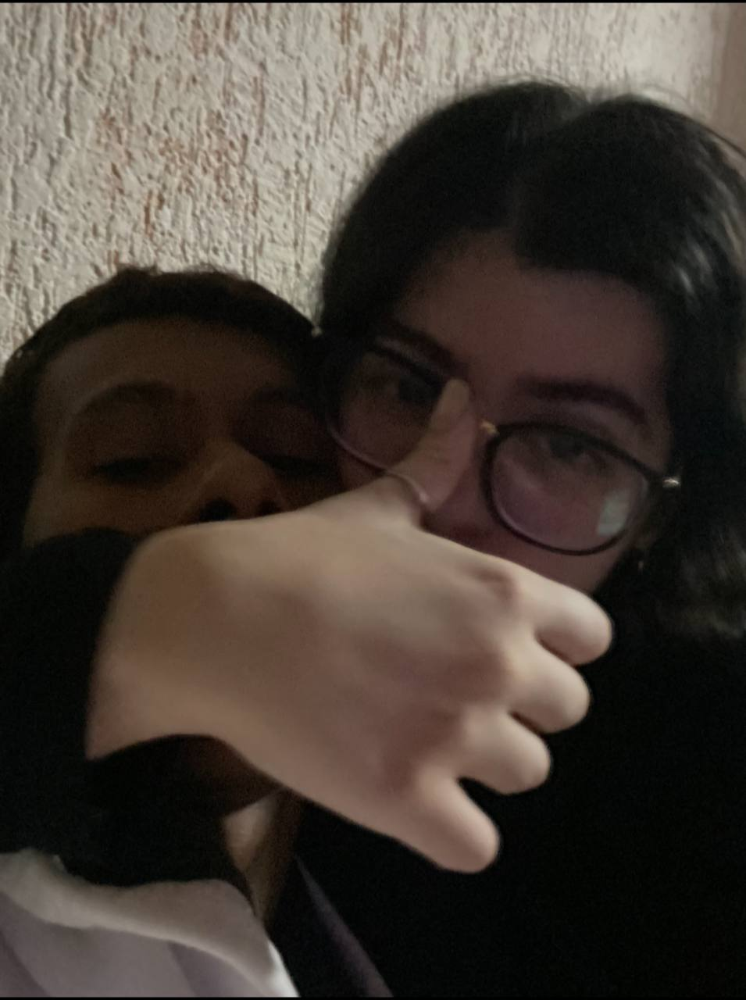
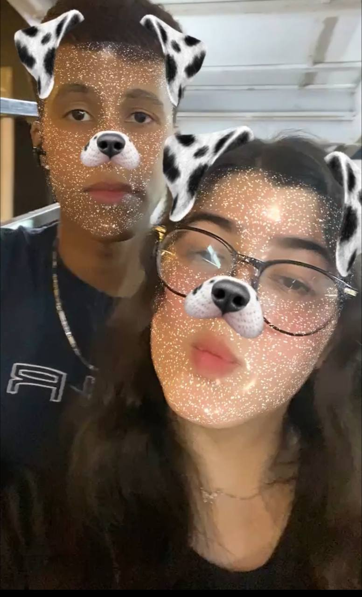

FELIZ MES VERSARIOOO lindinha!
foi amor à primeira vista. Demorou voce pedir meu insta e eu comentar no stories do carrossel
Cartinha
oii meu pao de love,
Hoje vamos ver divertidamente no caso se esse site sair porque demorou muito, bom primeiro que te agradecer como sempre por tudo que vc faz e fez por nos, ultimamente vc vem melhorando muito nosso relacionamento isso fez eu amar vc cada vez mais, TOMARA QUE ESSE SITE SAIA QUANDO A GENTE FOR VER DIVERTIDAMENTE, voltando não sei se fomos pra praia bem provável que não mais se não tiver ido fomos na radiatual com toda certeza, gica basicamente è isso eu te amo muito mulher você não tem ideia alguma de como você me faz tão feliz, graças a você hoje tenho foco vontade sabe de lutar não só por mim, mais por você por nós eu tenho muito a te agradecer como você me faz feliz, chega a ser besta mais toda vez que eu te vejo sinto paz e felicidade aquela vontade incrível de viver, você me inspira, me motiva, me abraça, me beija, e tão ficar no seu braço sabendo que você me ama, e me desculpa por tudo tudo mesmo, muitas vezes não mereço você, mais nosso relacionamento tá em uma fase linda que nos finalmente nos conhecemos, em todos sentidos sabe, eu lembro que teve uma fase que só tinha briga, mais caí entre nós a gente nem transava kkkkkkk brincadeira a parte, obrigado por tudo por pedir meu insta, por postar carrossel, e por jogar indiretas pra mim, poxa fico tão feliz meu filho ou filha terá você como mãe a pessoa que eu sempre sonhei agora fique com tudo que eu amo em você a baixo.
gata gata gata gata
linda, como sempre
